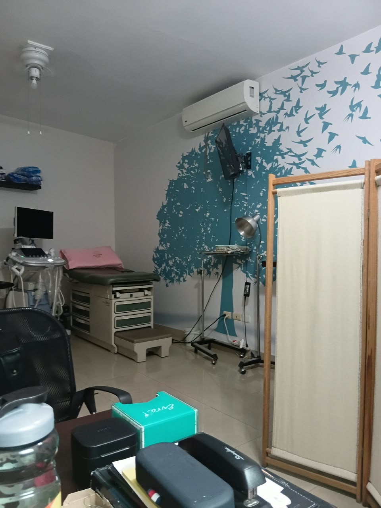

Métodos Anticonceptivos en Guadalajara: DIU Mirena, Kyleena, Cobre e Implante Subdérmico
Guía comparativa de métodos anticonceptivos de larga duración (LARC) colocados en consultorio con guía por ultrasonido en Chapalita, Guadalajara.
Leer guía médica →